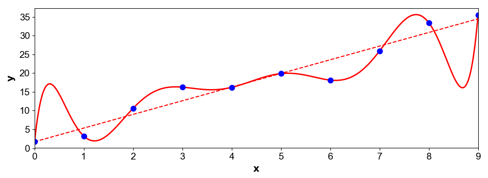
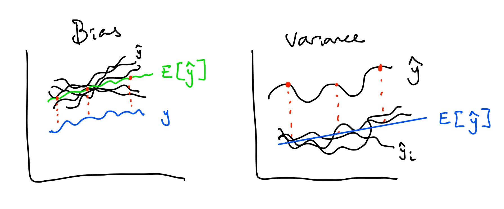
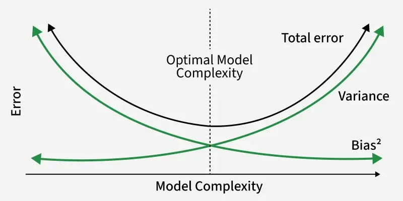
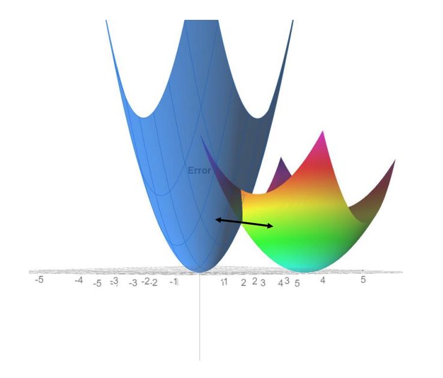
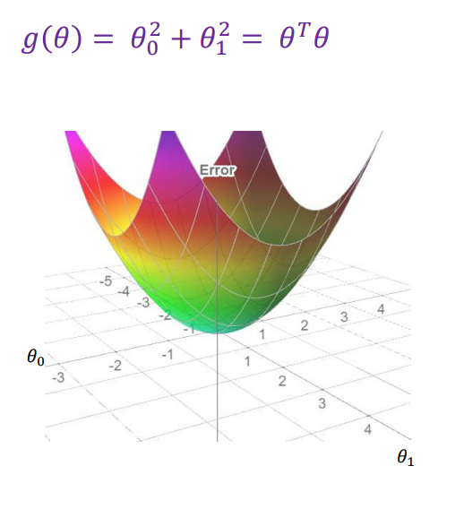
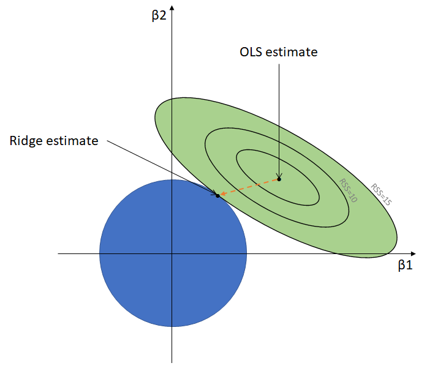
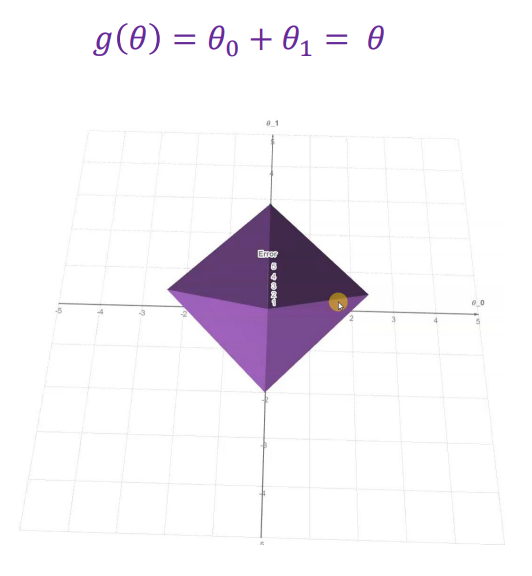
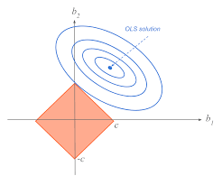
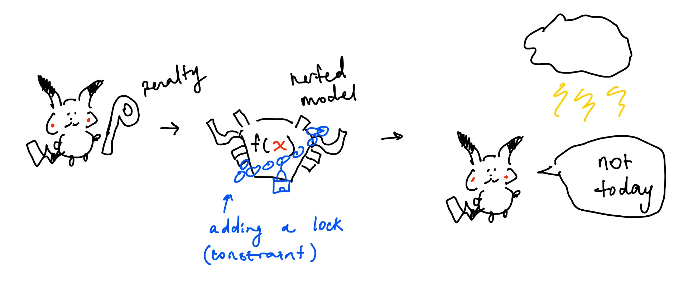

Previously, Pikachu built a model to not get struck by lightning. However, while he found that his model is great at predicting from past data, everytime Pikachu goes outside, he still gets struck! Despite wonderful training results from his optimized $\theta$ values, pikachu realizes that his model is not very good at predicting new unseen data. This is overfitting.
Here, I will throw out some formulas with notes.
| Formula | Term | Notes |
|---|---|---|
| $y - \mathbb{E}[\hat{y}]$ | Bias | How far is actual $y$ from average predicted $y$? |
| $\frac{1}{N} \sum (\hat{y} - \mathbb{E}[\hat{y}])^2 = \mathbb{E}[(\hat{y} - \mathbb{E}[\hat{y}])^2]$ | Variance | How far is our predicted value from the average predicted values? Does not rely on actual y. How flexible is our model? |
| $\text{Bias}^2 + \text{Variance} + \epsilon$ | Error | Same as the expected MSE $\frac{1}{n} \sum_{i=1}^{n} (y_i - \hat{y}_i)^2$ across multiple datasets |


So what is happening to Pikachu's model? His variance is probably too high :(
Usually, the more features we have, the more ways for a model to fit your training data and thus, the higher the variance.
So what is the fix? Regularization! This concept doesn't only apply to regression models. How do LLMs not overfit? Regularization.
So what does this mean? We are restricting our model. By increasing bias (more distance between $y$ and $\hat{y}$), we reduce the model's ability to match the true relationship. Since bias is sqaured, variance will drop a lot, meaning the model will become more stable. What does that mean intuitively?
Remember in a regression model: $$ y = \theta_0 + \theta_1 f_1(x) + \dots + \theta_d f_d(x) $$ Now, we are need to subject $\theta$ to contraints, pulling the values of $\theta$ down (high values = high variance). Previously, to get those $\theta$ values, we could have used gradient descent. Having our objective function as the MSE = Error, Pikachu trained his model so much that he was getting very low training error. However, low training error could cause overfitting and so we are unable to use this model to generalize. Instead of dropping a ball to the minimum, lets add a constraint so that we stop at some point before the minimum. This means we knowingly increase our error so our model is more generalizable.

All we need to do is add a constraint during training. Without constraining, $\theta$ becomes very large naturally. We can do this by adding a regularization (penalty) term: $$ L(\theta) = E(\theta) + \text{Regularization Term} \qquad \text{where $E(\theta)$ = MSE}\\ L(\theta) = E(\theta) + \lambda \theta^T \theta \qquad \qquad \qquad \text{$\lambda$ is a hyperparameter} $$ Since $\lambda$ is a hyperparameter, we must choose it:
$\theta^T \theta$ is the same as $\theta_1^2 + \theta_2^2 + \dots + \theta_d^2$. We do this to penalize large $\theta$ values and make optimization easy since it becomes a convex function and during gradient descent, it becomes $2\lambda \theta$. Large penalty means our objective function's error ($E(\theta) + \text{penalty}$) becomes very big so the optimzer will avoid these $\theta$ values.
So now, we have: $$ E(\theta) = \frac{1}{N}\sum_{i}^n (y_i - X\theta)^2 + \lambda ||\theta||_2^2 $$ Remember that $X\theta = \theta_0 + \theta_1 x_1 + \theta_2 x_2 + \dots + \theta_d x_d$. Before we get confused, lets replace $x$ with $z$, to clarify that $x$ can be any polynomial function $f(x) = z$.
This is only a type of regression known as ridge regression. Here are some more:
$$ E(\theta) = \frac{1}{N}\sum_{i}^n (y_i - z\theta)^2 + \lambda ||\theta||_2^2 $$


$$ E(\theta) = \frac{1}{N}\sum_{i}^n (y_i - z\theta)^2 + \lambda ||\theta||_1 $$


So how do we prevent overfitting? Use a regularization or penalty term. Earlier, Pikachu overfit to past data, making future predictions useless. By introducing higher error, we make our model more generalizable across new datapoints.
